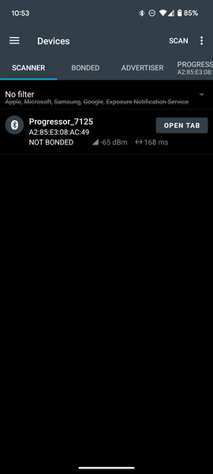

Crimpdeq
Meet Crimpdeq, an open source alternative to Tindeq Progressor, that works with Tindeq and ClimbHarder apps!
The project relies on an ESP32-C3 and uses a HX711 to get the measurements from the crane scale. For more details, see the Firmware chapter.
PCB is finished but has not been manufactured yet, hence, it's not tested.
Specs
- Sampling Frequency: 80 Hz
- Design Load: 1500 N (150 kg) (Full Scale)
- Precision:
- 0.05 kg between 0 and 99 kg
- 0.1 kg between 100 kg and above
- Working temperature: 0ºC - 40ºC
- Dimension: 80 mm x 90 mm x 35 mm
- USB-C rechargeable battery
⚠️ Note: Some of these specs come from the crane scale, if you use a different one, those values might change.
Making Your Own Crimpdeq
-
Required Materials
- ESP32-C3-DevKit-RUST-1
- Other ESP32 devices can be used, but you need to figure out how to charge the battery
- Battery Holder
- 18650 Battery
- Other batteries might also work, as long as they can power the device
- Crane Scale or Amazon alternative
- Other crane-scales might also work
- HX711
- ESP32-C3-DevKit-RUST-1
-
Disassemble the Crane Scale

- Desolder the battery connections.
- Desolder the four wires of the load cell (
E-,S-,S+andE+) from the PCB.
- Unscrew and remove the PCB along with the display.
-
Soldering Instructions
-
Modify the HX711 Module:
- Update the sample rate: Most HX711 modules come with the
RATEpin connected toGND, meaning that they sample at 10 Hz, if you want to sample at 80 Hz:
- Break the track of
RATEpin. - I did this by scratching the module with a knife.
- Verify with a multimeter that
GNDand theRATEpin are not connected anymore.
- Make sure that you don't break the next connection.
- Solder the
RATEtoDVDDpin. - Verify with a multimeter.
- Break the track of
- Optimize the measurements for 3.3V: Most HX711 modules come with a setup for 5V, if you want to optimize the measurements for 3.3V:
- Connect, in parallel, a resistor between 20k and 27k to
R1.R1is the highlighted resistor in the image:
- For more information, see this blogpost.
- This step is not mandatory, but it improves the measurements.
- Connect, in parallel, a resistor between 20k and 27k to
- Update the sample rate: Most HX711 modules come with the
-
Connect the Crane Scale to the HX711:
- Solder the 4 wires of the crane scale to the HX711. Usually the colors are:
HX711 Pin Load Cell Pin Description E+ E+ (Red) Excitation positive (to load cell) E- E- (Black) Excitation negative (to load cell) S+ S+ (Green) Signal positive (from load cell) S- S- (White) Signal negative (from load cell) - Note that sometimes the
Spins are referred asA.
-
Connect the HX711 to the ESP32-C3-DevKit-RUST-1 devkit:
HX711 Pin ESP32-C3 Pin Description VCC 3.3V Power supply (3.3V) GND GND Ground DT (Data) GPIO4 Data output from HX711 SCK (Clock) GPIO5 Clock signal for communication 
- Verify all the connections with a multimeter.
-
-
Adapt the Scale Case:
- Create space for the USB connector.
- I did this by placing the devkit, marking the space that I needed with a pen and then, heating a knife and melting the case.
- Install the battery holder:
- Glue, with some silicone, the battery holder, make sure to leave the lid for the original batteries of the scale open, as there is a hole for which you need to introduce the two wires of the battery holder.
- Solder the positive wire (red) of the battery holder to a switch/button, to turn on/off the device, then, solder the other pin of the button/switch to the
B+pin of ESP32-C3-DevKit-RUST-1. - Solder the negative wire (black) of the battery holder to the
B-pin of the ESP32-C3-DevKit-RUST-1.
- Close the case:
- Ensure all components are securely installed before closing the case.

- Ensure all components are securely installed before closing the case.
- Create space for the USB connector.
-
Upload the firmware:
-
Connect your device with a USB-C cable.
-
Pull the
crimpdeqrepository:git clone https://github.com/crimpdeq/crimpdeq-firmwareIf you don't have git installed on your system, you can go to the green Code button and use the "Download ZIP" option.
-
Upload the firmware to your device:
- Download the binary from the desired GitHub release.
- Open esp.huhn.me.
- Click Connect and select the serial port of your ESP board.
- Upload your .bin file(s).
- Click Program.
See this blogpost for more details.
-
Check if the calibration values work for your scale:
- Connect your device with ClimbHarder or Tindeq apps.
- Use the "Live View" option.
- Measure a known weight and verify that Crimpdeq measures the right value.
- If Crimpdeq calibration is off, see the Calibration chapter.
-
Calibration
This guide will help you calibrate your Crimpdeq device to ensure accurate weight measurements. The calibration process involves using a known weight to establish a reference point for the device's measurements.
- Download and install the nRF Connect app for your platform:
- Connect nRF Connect with Crimpdeq:
- Launch the nRF Connect app.
- Navigate to the Scanner tab.
- Look for a device named "Progressor_7125".
- Tap "Connect".
- Once connected, the app will display the device's services and characteristics.

- Locate the Calibration Characteristic:
- Expand the "Unknown Service" section.
- Look for the characteristic with UUID:
7e4e1703-1ea6-40c9-9dcc-13d34ffead57.
- Calculate the Hex Value of your known weight:
- Open the Floating Point to Hex Converter.
- Use "Single-precision" floating point converter.
- Enter your known weight in the "Float value" field.
- Click "Convert to hex".
- Save the resulting "Hex value".
Example: For a known weight of 75.3 kg, the hex value would be
0x4296999a.
- Perform Calibration:
- Hang your Crimpdeq with no weight attached.
- Send the command
7300000000to the characteristic:-
Tap the Up Arrow icon on the characteristic (
7e4e1703-1ea6-40c9-9dcc-13d34ffead57). -
Enter the command as shown in the screenshot.

-
- Now, attach your known weight to the Crimpdeq.
- Prepare the calibration command:
- Take your hex value from the previous step.
- Add
73at the beginning. Example: For 75.3 kg (0x4296999a), the command would be:734296999a.
- Send this new command to the same characteristic (
7e4e1703-1ea6-40c9-9dcc-13d34ffead57).
Important Notes
- The known weight should be greater than the maximum weight you plan to measure.
- Make sure the device is stable and not moving when sending calibration commands.
- The calibration process should be performed in a controlled environment.
Charging the Battery
To charge your device simply:
- Connect a USB-C Cable:
- Plug the device into a power source using a USB-C cable.
- A red LED will turn on, indicating that the device is charging.
- Wait for the Charge to Complete:
- Once the red LED turns off, the battery is fully charged.
- You can now unplug the device and use it!

Firmware
The firmware application is written in asynchronous Rust (no_std) using esp-hal along with some ancillary crates.
Prerequisites
To build and upload the firmware to your device, ensure you have the following installed:
- Rust: See installation for details
- The
stabletoolchain with the ESP32-C3 target architecture installed:rustup toolchain install stable --component rust-src --target riscv32imc-unknown-none-elf probe-rsinstalled, see instructions
How to Build
To build the firmware, run:
cargo build --release
To build and upload the firmware to your device, refer to the Build and Flash your Device section.
How to Flash your Device
Build and Flash your Device
Since we've set a custom runner in the .cargo/config.toml, you can build and upload the resulting binary to your target using:
cargo run --release
This will also open a serial monitor, allowing you to view log messages in real time.
To modify the log level, update the DEFMT_LOG value in .cargo/config.toml or set it when running the command:
DEFMT_LOG=debug cargo run --release
⚠️ Note: If you're using a different DevKit that doesn't include USB-Serial-JTAG, you'll need to flash the device via UART. This requires updating the custom runner in
.cargo/config.tomland usingespflashinstead ofprobe-rs.
Flashing From Your Browser
This method does not require any of the Prerequisites, but also it does not allow modifying the code. Instead, it only allows flashing a released firmware version.
To flash the released binary using your browser:
- Download the binary from the desired GitHub release
- Open Adafruit ESPTool
- Click Connect and select the serial port of your ESP board (should be named
USB/JTAG serial debug unit...) - Upload your .bin file(s) at offset 0x
10000 - Click Program

Code Structure
hx711
This module implements the load cell functionality, it's an async version of the loadcell crate with additional modifications.
ble
This module implements the Bluetooth Low Energy (BLE) functionality:
- Defines the GATT server and services
- Handles advertising and connections
- Defines the Progressor service with data point and control point characteristics
progressor
The progressor module implements the Tindeq API, enabling BLE (Bluetooth Low Energy) communication between the ESP32-C3 and a smartphone.
Main Tasks
The main.rs file defines several asynchronous tasks that run concurrently:
measurement_task:- Initializes the load cell
- Handles taring and reading measurements from the sensor.
ble_task:- This is a background task that is required to run forever alongside any other BLE tasks.
gatt_events_task:- Processes GATT events like control point writes
data_processing_task:- Handles sending notifications with data points
Communication between tasks occurs via a Channel.
PCB
The PCB design is located in the hardware folder and was created using KiCad. It is a two-layer layout based on the Rust ESP Board. This design removes unused sensors from the original board and adds the necessary components for this project.
Status
Currently, the PCB has not yet been manufactured, so it remains untested.